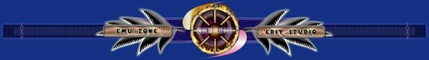

GB、GBC、GBA
PlayStation
DC
N64
便宜才是硬道理－－自己动手打造GBA Link FLASH卡带
注：本文是用通俗的语言从尽量通俗的角度来讲解改造的方法，所以请不要与技术文章等同。
郑重声明：
1.一旦你拆开卡带，你将失去卡带保修的权利。
2.改造有风险，可能有此导致卡带报废。
3.即使改造没有问题，但个别卡带可能会出现进入游戏时死机。
我们只是提供一种改造思路，对于读者在改卡过程中造成的任何损失，我们不付任何责任。
一、改造卡带的目的
在GBA Link烧录系统中，除了GBA Link烧录器外，还需要FLASH卡带与之配套。除了购买我们的FLASH卡带外，还可以自己动手改造手头现有的D版卡带。这样不但可以充分利用手头的闲置卡带，还能节省不少银子，亦可享受一下DIY的乐趣。
二、哪些卡带能够改造
如果你打开过D版卡带，你会发现很多D版卡带不像原装卡带一样采用ROM存储游戏，而是使用FLASH芯片来存储游戏。ROM是一次性的，无法改写其中的内容，但是FLASH则是可反复擦写的存储器芯片。因为有很多D版卡带采用FLASH芯片作为存储器，这就带来了一种可能性，就是我们可以通过改造把它变成一块FLASH卡带。
结论：只有采用FLASH芯片的D版卡带才能改造成FLASH卡带。实际上市面上大多数D版卡带都采用了FLASH芯片。
下面我们来看看拆开的D版卡带内部的照片。
卡带内部的照片(点击图放大)
在图中标明了FLASH芯片、SRAM芯片、控制芯片。可以看出控制芯片都采用了软封装（黑胶封装），而主存储FLASH芯片则采用了标准的TSOP48、TSOP52等封装形式，俗称硬封装。对于FLASH芯片，如果是上述这些TSOP48、TSOP52等封装形式，不管芯片上有没有字，我们基本可认为是FLASH芯片。
通俗的来说，黑胶封装的是控制芯片、较小的芯片是SRAM芯片用来存储进度，较大的一个或者两个芯片是FLASH芯片，用来存储游戏ROM。fujitsu和INTEL的芯片体积较大一些，都是长方形，fujitsu的芯片引脚在长方形的两个短边上，INTEL的芯片引脚在长方形的两个长边上。三菱的芯片体积比较小，近似正方形。
不能改造的卡带：有些卡带拆开后会发现，主存储芯片也是黑胶封装的，对于这种芯片，我们无法确认是否为FLASH芯片，不过如果黑胶是通过转接板焊接到电路板上的，倒是有可能做实验来验证能否改造，不过因为这种卡带很少，我们就不作进一步研究了。当然，有兴趣的朋友可以做实验来验证一下是否为FLASH芯片。
三、改造的原理
任何一种FLASH卡带都由控制芯片、FLASH芯片、进度存储芯片组成。
1.控制芯片
对于Z版或D版的卡带，其控制芯片都采用了ASIC专用芯片，因此耗电量更小。而一些爱好者开发的FLASH卡带中一般用市面上现成的可编程器件芯片，通过写入程序来做为控制芯片，因此耗电量都要大一些。D版卡带中的控制芯片都采用软封装（你看到的就是一块黑胶）。
2.FLASH芯片
FLASH芯片通常有一片或者两片，它的存储容量很大，用来存储游戏主程序（就是ROM文件），所谓单芯片卡带是指一片FLASH芯片完成ROM的存储，双芯片卡带指用两片FLASH芯片完成ROM的存储，因此64M单芯片卡带指采用了一片64Mbit容量的FLASH芯片，64M双芯片卡带指用了两片32Mbit容量的FLASH芯片。
3.进度存储芯片
另外就是进度存储芯片，GBA的游戏有三种存储方式：SRAM存储方式、FLASH存储方式、EEPROM存储方式，实际上还有一种方式－－就是不需要存储进度的游戏。
对于这几种存储方式对应着不同的芯片来完成相应的存储功能。SRAM芯片对应SRAM存储方式、FLASH芯片对应FLASH存储方式（注意：这里说的FLASH芯片和前面说的存储ROM文件的FLASH芯片是不同的，存储ROM文件的FLASH芯片是大容量的，存储进度的FLASH芯片是小容量的。表现在具体的卡带中，它们是互相独立的芯片，各自完成各自的功能。）EEPROM芯片对应EEPROM存储方式。而实际上D版卡带并没有这么麻烦。除了少量卡带是采用FLASH芯片来完成FLASH进度存储方式外，大部分D版卡带都用SRAM芯片来完成三种存储方式，也就是说通过控制芯片将FLASH存储方式转换后存储到SRAM芯片上，对于EEPROM存储方式的则通过打补丁方式把进度存储到SRAM芯片上。这也就是为什么我们会看到黄金太阳的卡带中有电池的缘故。
上面大概介绍了一下卡带的结构，那么D版卡带如何来改变其内容，使之变成一个新游戏呢。这里我们做一个比较，对于普通的D版卡带，只能读取卡带中的数据。对于可烧录的FLASH卡带，由于使用FLASH芯片，可以改写卡带中的数据。而我们前面已经讲过，大部分D版卡带都采用FLASH芯片存储游戏，从硬件结构上讲，它们和可烧录的FLASH卡带并无太大区别，因此同样可以改写卡带中的数据。
改写卡带的数据实际上是改写卡带上FLASH存储芯片中的数据。对于FLASH芯片，要读取数据或者擦除数据或者写入数据，需要控制一些管脚来满足某种时序关系。要完成擦除和编程操作则必须能够控制FLASH芯片的WE引脚，但读取操作的时候只需把WE置为高电平就行了。因为普通的卡带设计的时候并不需要擦除和编程的功能，因此将WE引脚与电源VCC连接到一起，让WE始终为高电平，从卡带的外部引脚上是无法控制WE的，从而屏蔽掉了擦除和编程的功能。我们要做的就是要恢复这个功能。这就是要将FLASH芯片的WE引脚与电源VCC分离，并将它与GBA卡带的第3脚连接起来。GBA卡带的第3脚的功能是WR，我们可以通过这个引脚去控制FLASH芯片的WE，这样对卡带FLASH芯片进行改写的硬件条件就具备了，也就是说D版卡带经简单改造后就可以当做一个FLASH卡带来使用了。
总结：改造卡带的原理就是把FLASH芯片的WE引脚与VCC分离开，并与卡带的第3脚连接到一起。如果卡带是单芯片的FLASH卡带，只需要改造一个FLASH芯片的WE引脚，如果是双芯片的卡带，那么两个FLASH芯片的WE引脚都需要改造，都需要连接到卡带的第3脚。
四、改造卡带需要的工具
虽然改造的工作非常简单，但是有一定的技巧性，因此准备合适的工具非常重要的。
1.电烙铁
电烙铁(点击图放大)
普通的十几元一把的电烙铁都可以，推荐广州的黄花牌的，便宜好用。烙铁尖要细而尖，这样才好用。功率30W左右的就行，不可太大。
2.焊锡丝
焊锡丝(点击图放大)
一点就够了，不过要细一些才好用。
3.缝衣针
缝衣针(点击图放大)
最小号的缝衣针一根，只要手能捏的住，尽量小一些。
4.漆包线
漆包线(点击图放大)
可以从坏的变压器上拆到。什么是变压器？:）如果你有坏的收音机、随身听用电源，拆开里面就有变压器。
5.螺丝刀
螺丝刀(点击图放大)
这可不是普通的螺丝刀，这是GBA专用的三菱形螺丝刀。其实这种螺丝刀估计其他地方也能用到，所以在一些大点的工具店都能买到。如果实在找不到，就找个一字螺丝刀凑合凑合吧。
五、改造的具体方法
1.需要了解FLASH芯片的型号，因为只有了解到芯片的型号，才能查找到它的数据资料，也才能知道芯片的WE引脚是第几脚。
注：先说说芯片引脚顺序的识别。
引脚顺序(点击图放大)
集成电路的引脚都是按逆时针顺序排列的。通常第1脚都加的有标记。对于富士通芯片来说，第1脚旁边有一个园形的标记。对于三菱芯片来说比较特殊一些，芯片的上面有三个园形的标记，其中有一个比较小一些，这个小一些的标记对应的角上的第1脚就是芯片的第1脚。如果你对集成电路引脚不是很熟悉的话，也可以查芯片的数据手册来分辨引脚顺序。
FUJITSU芯片
首先要拆卡带。卡带背后有螺丝，先要拆下螺丝，然后才能打开外壳。
卡带上有封条(点击图放大)
拆掉封条，露出螺丝，螺丝比较特殊，需要专用的螺丝刀才能拆卸(点击图放大)
采用FUJITSU芯片的卡带(点击图放大)
在D版卡带中能见到的FUJITSU公司的FLASH芯片都是上图中的样子。目前只见到过29DL323TD这个型号，采用TSOP48封装，芯片上有一个稍大一点的字面F的图形，这是富士通的标记。由于29DL323TD的容量是32Mbit，因此对于64Mbit的卡带都采用了两片这样的芯片。芯片上有一个园坑，这个园坑标明了芯片第1脚的位置。但我们也见到了一些擦去型号的芯片，对于擦去型号的芯片，不太严格的说，如果上面仅在一个角上有一个园坑的话，基本可判定是富士通的芯片。
芯片的的WE引脚是芯片的第11脚。如果你用万用表测量一下，会发现，WE引脚是与卡带的第1脚，也就是VCC相连的，因此我们第一步需要将该引脚与VCC分离。首先要用缝衣针斜着插入到第11脚下面，然后用电烙铁给第11脚加热，然后用缝衣针轻轻将该引脚挑起即可。这个过程必须非常小心，因为如果把引脚挑断，卡带就报废了。同时也要小心不要让这个引脚与旁边的引脚短路。
(点击图放大)
(点击图放大)
第二步要把第11脚与卡带的第3脚连接到一起，这就要用到漆包线。根据芯片第11脚与卡带第3脚之间的距离剪取合适长度的漆包线。漆包线外面有漆层，所以首先要用小刀把漆包线两端的漆层刮掉，然后用电烙铁上锡。漆包线准备好后，就可以焊接了。对于单芯片的卡带，只需要一根漆包线，对于双芯片的卡带则需要两根。漆包线的一头焊接到卡带的第3脚，漆包线的另一头焊接到刚才挑起的芯片的第11脚上。卡带的第3脚比较大，因此很容易焊接，不过应注意焊点要小，不要用太多的焊锡。芯片的第11脚非常小，所以焊接有一定的难度，应当非常仔细。
(点击图放大)
(点击图放大)
第三步要在卡带外壳与卡带第3脚对应的位置挖一个缺口，否则第3脚的焊点可能会阻碍外壳的装配。方法很简单，用电烙铁烫一下就可以了，然后有小刀把突出的塑料修平整。
MITSUBISHI芯片
采用三菱芯片的卡带现在也逐渐多起来，三菱芯片的型号比较杂一些，各种型号之间还存在不少差异，由于三菱芯片的资料缺乏，软件目前还做不到完全支持，这有待于以后改进，如果哪位朋友能找到三菱芯片的数据手册，请发给我们。目前支持的比较好的型号是M6MGT647。
采用三菱芯片的卡带(点击图放大)
通常在采用三菱FLASH芯片的64M卡带中只采用一片64Mbit芯片。常见的型号是M6MGT647，它采用TSOP52II封装，比一般的TSOP48封装的芯片要小，目前还没有在卡带中发现其他公司的芯片采用这种封装的。它的WE引脚也是第11脚。改造的方法和上面介绍的富士通的芯片是相同的，不同的是三菱的芯片引脚更密，因此应该更加仔细。另外由于采用单芯片，改造起来更简单，只要焊一根线就可以了。
东芝公司的芯片
采用东芝芯片的卡带(点击图放大)
由于东芝的FLASH芯片的特殊性，所以软件无法支持。也就是说即使把采用东芝芯片的卡带改造成FLASH卡带，也无法通过GBA Link来烧写。不过采用这种芯片的卡带非常少见。
采用转接板的卡带：
有些卡带内部的FLASH芯片是通过转接板焊接到卡带电路板上的，有一定特殊性，目前软件暂不支持，有待以后研究。
INTEL芯片
SMART CARD(点击图放大)
手头有一张SMART CARD，这种卡本来就是FLASH卡带，它可以支持FLASH存储方式和SRAM存储方式，两种方式通过开关来切换。
SMART CARD采用的是INTEL公司的FLASH芯片。型号为28F640J3A。芯片采用56脚TSOP封装。查数据手册可知，该芯片的第55脚为WE。对于普通的D版卡带来说，这个脚都与VCC连接在一起，但对于FLASH卡带来说，要对这条引脚加以控制，所以这张卡带中的FLASH芯片的WE引脚并不是接VCC，而是与控制芯片连接在一起的。
改造图(点击图放大)
测量一下，可以发现第55脚到控制芯片之间经过了一个过孔，卡带的第3脚上面也有一个过孔。（所谓过孔，是电路板上的铜箔为了从一个面转到另外一面，就在电路板上钻一个小孔，孔做金属化处理，这样孔的正反两个面就导通了，两个面上的铜箔分别连接到孔的正反两面的焊盘上，两面的铜箔就连接到一起了。）
这样一来，使得改造变的非常简单。因为过孔比芯片的引脚要大的多，焊接起来也方便。我们只需要把第55脚到控制芯片之间的铜箔从过孔之后割断，然后把第55脚旁的这个过孔与卡带第3脚上面的过孔连接到一起就行了。
改造好的D版卡带，它们的存储方式是和原卡带存储的游戏的存储方式是相同的，也就是说用黄金太阳或机战A等卡带改造的卡带是FLASH存储方式。用恶魔城白夜或拳皇EX等卡带改造成的卡带是SRAM存储方式。如果原游戏卡带不具备存储能力的话，改造后也不能存储进度（这种情况非常少见）。
目前市面上的大部分卡带都可以与上面的改造方法对号入座。如果有其他特殊芯片的卡带，可以与我们联系。另外需要说明的是，卡带的烧录不是光把卡带改造一下那么简单，还需要和软件相配合。软件部分我们还会不断改进，以增加对更多种芯片的支持。硬件方面我们以后还会不断增加D版卡带中出现的其他芯片的改造资料。
六、改造后的测试
本次改造好的卡带是与GBA Link配套的FLASH卡带，也就是说这种改造卡带必须与GBA Link配套使用。其他烧录设备是不能支持该卡带的。
测试的环境：
计算机一台（赛扬766 128M内存）
GBA Link一套（高速版）
改造好的卡带（FUJITSU芯片）
GBA游戏机一台
1. 将GBA Link一头插计算机的并口（打印口），一头插GBA游戏机。将卡带插入到GBA的卡槽中。启动GBA Link烧录程序，提示检测不到GBA Link，然后开启GBA的电源开关，程序会提示检测到GBA Link。
然后进行设置。单击“设置”菜单下的“系统参数”，会弹出设置窗口。第1项是并口设置，默认值为：LPT1 (0x378)。可根据具体情况进行修改。第2项是I/O延迟值设置，默认值为0，这时烧写速度最快。不过有些计算机在这种设置下可能不能正常烧录，如果遇到这种情况，可以把延迟值调整到1。如果还不行就调整到2，直到功能正常为止。最下面一项是“擦除、烧录之前自动检测卡带”，选中这一项，在以后烧录卡带时就不用手动进行卡带类型选择了，软件会自动完成选择。对于这台计算机，当延迟值设为1时，工作正常。
2. 关闭GBA电源，同时按GBA游戏机的START和SELECT两个按钮，重新启动GBA，进入等待连接模式。单击“卡带”菜单下的“选择卡带类型”下的“自动检测卡带类型”。几秒钟后，提示检测到的卡带为FUJITSU芯片卡带[64Mbit（双芯片）]。检测的结果与实际的卡带是相符的。
3. 关闭GBA电源，同时按GBA游戏机的START和SELECT两个按钮，重新启动GBA，进入等待连接模式。单击“卡带”菜单下的“擦除卡带”，在执行擦除操作时有进度显示，并且状态栏会提示：正在擦除卡带，当擦除完成时，程序会提示：擦除卡带完成。
4. 关闭GBA电源，重新打开GBA的开关，因为卡带内容已被清空，所以会直接进入等待连接模式。单击“卡带”菜单下的“烧写卡带”，在弹出的窗口中选择要烧录的游戏ROM或其他ROM文件，确定即可。烧写时，状态栏会提示当前ROM的文件名，进度条指示烧写的进度，另外还可以看到烧写耗费的时间和烧写的速度。
注：这里需要注意的是，不同的游戏有不同的存储方式，如果把游戏ROM烧录到与该游戏ROM存储方式不同的卡带中，烧好的卡带在GBA上运行时就不能存储进度或者根本不能运行。
【模拟器硬件DIY】版权所有 Copyright(C) 2001-2004 本站资料未经许可，请勿转载，如有需求，请
联系
。